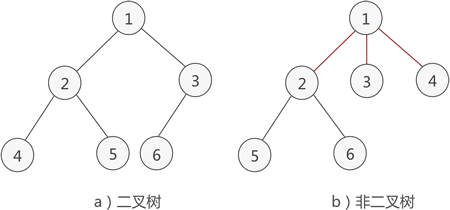
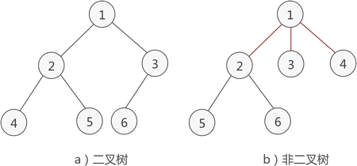

什么是二叉树（包含满二叉树和完全二叉树）
通过《树的存储结构》一节的学习，我们了解了一些树存储结构的基本知识。本节将给大家介绍一类具体的树结构——二叉树。
简单地理解，满足以下两个条件的树就是二叉树：
例如，图 1a) 就是一棵二叉树，而图 1b) 则不是。

图 1 二叉树示意图
二叉树还可以继续分类，衍生出满二叉树和完全二叉树。

图 2 满二叉树示意图
如图 2 所示就是一棵满二叉树。
满二叉树除了满足普通二叉树的性质，还具有以下性质：

图 3 完全二叉树示意图
如图 3a) 所示是一棵完全二叉树，图 3b) 由于最后一层的节点没有按照从左向右分布，因此只能算作是普通的二叉树。
完全二叉树除了具有普通二叉树的性质，它自身也具有一些独特的性质，比如说，n 个结点的完全二叉树的深度为 ⌊log2n⌋+1。
简单地理解，满足以下两个条件的树就是二叉树：
- 本身是有序树；
- 树中包含的各个节点的度不能超过 2，即只能是 0、1 或者 2；
例如，图 1a) 就是一棵二叉树，而图 1b) 则不是。

图 1 二叉树示意图
二叉树的性质
经过前人的总结，二叉树具有以下几个性质：- 二叉树中，第 i 层最多有 2i-1 个结点。
- 如果二叉树的深度为 K，那么此二叉树最多有 2K-1 个结点。
- 二叉树中，终端结点数（叶子结点数）为 n0，度为 2 的结点数为 n2，则 n0=n2+1。
性质 3 的计算方法为：对于一个二叉树来说，除了度为 0 的叶子结点和度为 2 的结点，剩下的就是度为 1 的结点（设为 n1），那么总结点 n=n0+n1+n2。
同时，对于每一个结点来说都是由其父结点分支表示的，假设树中分枝数为 B，那么总结点数 n=B+1。而分枝数是可以通过 n1 和 n2 表示的，即 B=n1+2*n2。所以，n 用另外一种方式表示为 n=n1+2*n2+1。
两种方式得到的 n 值组成一个方程组，就可以得出 n0=n2+1。
二叉树还可以继续分类，衍生出满二叉树和完全二叉树。
满二叉树
如果二叉树中除了叶子结点，每个结点的度都为 2，则此二叉树称为满二叉树。图 2 满二叉树示意图
如图 2 所示就是一棵满二叉树。
满二叉树除了满足普通二叉树的性质，还具有以下性质：
- 满二叉树中第 i 层的节点数为 2n-1 个。
- 深度为 k 的满二叉树必有 2k-1 个节点 ，叶子数为 2k-1。
- 满二叉树中不存在度为 1 的节点，每一个分支点中都两棵深度相同的子树，且叶子节点都在最底层。
- 具有 n 个节点的满二叉树的深度为 log2(n+1)。
完全二叉树
如果二叉树中除去最后一层节点为满二叉树，且最后一层的结点依次从左到右分布，则此二叉树被称为完全二叉树。图 3 完全二叉树示意图
如图 3a) 所示是一棵完全二叉树，图 3b) 由于最后一层的节点没有按照从左向右分布，因此只能算作是普通的二叉树。
完全二叉树除了具有普通二叉树的性质，它自身也具有一些独特的性质，比如说，n 个结点的完全二叉树的深度为 ⌊log2n⌋+1。
⌊log2n⌋ 表示取小于 log2n 的最大整数。例如，⌊log24⌋ = 2，而 ⌊log25⌋ 结果也是 2。
对于任意一个完全二叉树来说，如果将含有的结点按照层次从左到右依次标号（如图 3a)），对于任意一个结点 i ，完全二叉树还有以下几个结论成立：- 当 i>1 时，父亲结点为结点 [i/2] 。（i=1 时，表示的是根结点，无父亲结点）
- 如果 2*i>n（总结点的个数） ，则结点 i 肯定没有左孩子（为叶子结点）；否则其左孩子是结点 2*i 。
- 如果 2*i+1>n ，则结点 i 肯定没有右孩子；否则右孩子是结点 2*i+1 。
总结
本节介绍了什么是二叉树，以及二叉树的性质，同时还介绍了满二叉树和完全二叉树以及各自所特有的性质，初学者需理解并牢记这些性质，才能更熟练地使用二叉树解决实际问题。关注公众号「站长严长生」，在手机上阅读所有教程，随时随地都能学习。内含一款搜索神器，免费下载全网书籍和视频。

微信扫码关注公众号